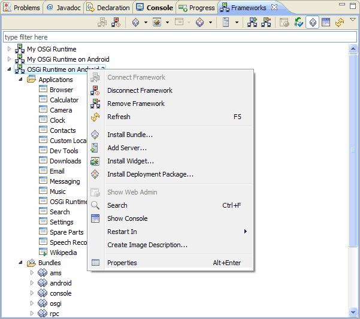
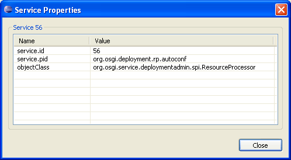
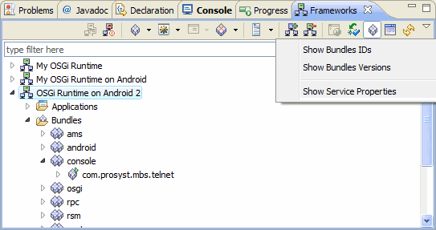
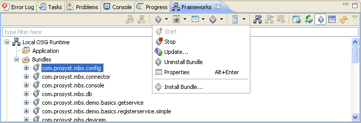

Connect Framework
Disconnect Framework
Add Framework
The tree of a connected OSGi framework, displayed in the Frameworks view, has a popup menu, activated upon right-click, with different items depending on the currently selected node as well as on the mToolkit extensions installed in Eclipse.

Figure 1: The popup menu of the Frameworks view.
| Popup Menu Command | Description |
|---|---|
| No node is selected | |
| Add Framework | Adds a new OSGi framework to the tree of frameworks. |
| Common to All Node Types | |
| Show Web Admin | Shows the Web Admin Console running on the connected framework in a Web view. Enabled only if the framework has the bundles of the Web Admin Console installed. |
| Search | Looks for a node whose name contains the specified string. |
| Show Console | Displays the console for the relevant OSGi framework. |
| Restart In | Restarts the framework remotely and if needed the framework can be re-launched in a mode that allows remote profiling and debugging. Requires framework start through the runtime management agent. Available if a specific mToolkit extension is installed. |
| Create Image Description | Generates an Image Description file reflecting the structure and content of the connected runtime. The description file can be then used to create an image for a specific target device platform. Supported if a specific mToolkit extension is installed. |
Framework Node |
|
| Connect Framework | Connects to the selected remote OSGi framework(s). Enabled only when there is no connection to the framework. |
| Disconnect Framework | Disconnects from the remote framework(s). Enabled only when there is a connection to the device. |
| Remove Framework | Removes the currently selected framework from the tree. |
| Refresh | Refreshes all device information shown in the tree of a device(s). |
| Install Bundle | Installs a new bundle on the selected framework. |
| Add Server | Adds an account of an OMA DM management server to the OSGi runtime management server registry. Available if a specific mToolkit extension is installed. |
| Install Deployment Package | Installs a deployment package on the selected framework. Available if a specific mToolkit extension is installed. |
| Properties | Shows the connection settings for the current OSGi framework |
Bundle Node |
|
| Start | Starts the selected bundle(s). |
| Stop | Stops the selected bundle(s). |
| Update | Updates the selected bundle. |
| Install Bundle | Installs a new bundle on the selected framework. |
| Uninstall Bundle | Uninstalls the selected bundle(s). |
| Refresh | Updates the information about the services of the selected bundle across the device's tree. |
| Show Bundles IDs | Displays the bundle IDs in braces after the bundle names. |
| Show Bundles Versions | Displays the bundle versions in braces after the bundle names. |
| Properties | Shows the content of the manifest file of the selected bundle. |
| Deployment package node (available if a specific mToolkit extension is installed) |
|
| Install Deployment Package | nstalls a deployment package on the selected framework. |
| Uninstall Deployment Package | Uninstall the selected deployment package(s). |
| Properties | Shows the headers from the main section of the deployment package manifest file. |
Service Node |
|
| Go to service | Allows you to go to the node of the registered service. Enabled only for the object classes of services within Used Services sub-nodes, i.e. services used from other bundles. |
| Properties | Shows the registration properties of the selected service.  |
Application node (available if a specific mToolkit extension is installed) |
|
| Start Application | Starts the selected application |
| Stop Application | Stops the selected application |
| Properties | Shows the properties of the selected application |
| Management server node | |
| Connect Server | Connects the framework with the selected management server. |
| Disconnect | Disconnects the framework from the server. |
| Remove Server | Deletes the server account from the framework. |
| Properties | Shows the connection properties of the management server. |
The Frameworks view has a pulldown menu with options similar to those from the view's context menu.

Figure 3: The pulldown menu of the Frameworks view.
| Pulldown Menu Command | Description |
|---|---|
| Show Bundle IDs | Displays the bundle IDs in braces after the bundle names. |
| Show Bundle Versions | Displays the bundle versions in braces after the bundle names. |
| Show Service Properties | Shows the registration properties of the services. |
mToolkit adds a toolbar to the Frameworks view, which enables administration over OSGi frameworks and has commands similar to those of the popup menus.

Figure 4: Frameworks view toolbar.
| Button | Toolbar Command | |
|---|---|---|
Connect Framework |
||
Disconnect Framework |
||
| Opens a pulldown menu for actions on a selected bundle. | ||
| Stop | ||
| Start | ||
| Update | ||
| Install Bundle | ||
| Uninstall Bundle | ||
| Opens a pulldown menu for actions on a selected application. | ||
| Start Application | ||
| Stop Application | ||
| Properties | ||
| Opens a pulldown menu for actions for deployment packages. It is available if a specific extension to mToolkit is installed in Eclipse. | ||
| Install Deployment Package | ||
| Uninstall Deployment Package | ||
| Properties | ||
| Opens a pulldown menu for actions for registering accounts of OMA DM servers on the OSGi framework. It is available if a specific extension to mToolkit is installed in Eclipse. | ||
| Connect Server | ||
| Disconnect | ||
| Add Server | ||
| Remove Server | ||
| Properties | ||
Add Framework |
||
| Remove Framework | ||
| Show Web Admin | ||
| Show Services | ||
| Show Bundles | ||
| Show Console | ||

OSGi Management Overview
OSGi Frameworks Tree
Remote Console

Adding/Removing an OSGi Runtime
Configuring the Properties of an OSGi Runtime
Connecting to/Disconnecting from an OSGi Runtime
Managing Bundles
Managing Applications
Opening the Web Admin Console inside Eclipse
Using the Remote Console
Customizing OSGi Management
OSGi Management Troubleshooting